Uma loja decide premiar seus clientes. Cada cliente receberá um dos seis possíveis brindes disponíveis, conforme sua ordem de chegada na loja. Os brindes a serem distribuídos são: uma bola, um chaveiro, uma caneta, um refrigerante, um sorvete e um CD, nessa ordem. O primeiro cliente da loja recebe uma bola, o segundo recebe um chaveiro, o terceiro recebe uma caneta, o quarto recebe um refrigerante, o quinto recebe um sorvete, o sexto recebe um CD, o sétimo recebe uma bola, o oitavo recebe um chaveiro, e assim sucessivamente, segundo a ordem dos brindes.O milésimo cliente receberá de brinde um(a)
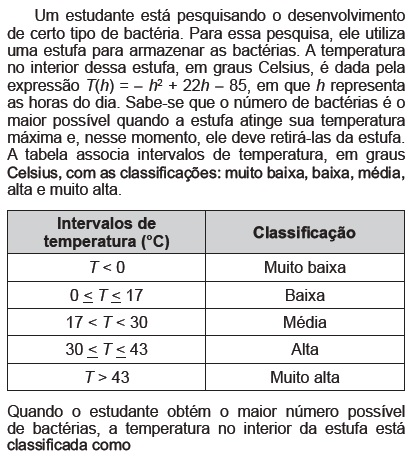
Um dos grandes problemas da poluição dos mananciais (rios, córregos e outros) ocorre pelo hábito de jogar óleo utilizado em frituras nos encanamentos que estão interligados com o sistema de esgoto. Se isso ocorrer, cada 10 litros de óleo poderão contaminar 10 milhões (107) de litros de água potável.Manual de etiqueta. Parte integrante das revistas Veja (ed. 2055), Cláudia (ed. 555), National Geographic (ed. 93) e Nova Escola (ed. 208) (adaptado). Suponha que todas as famílias de uma cidade descartem os óleos de frituras através dos encanamentos e consomem 1 000 litros de óleo em frituras por semana. Qual seria, em litros, a quantidade de água potável contaminada por semana nessa cidade?
Durante a Segunda Guerra Mundial, para decifrarem as mensagens secretas, foi utilizada a técnica de decomposição em fatores primos. Um número N é dado pela expressão 2x 5y 7z , na qual x, y e z são números inteiros não negativos. Sabe-se que N é múltiplo de 10 e não é múltiplo de 7.O número de divisores de N, diferentes de N, é
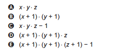
Em canteiros de obras de construção civil é comum perceber trabalhadores realizando medidas de comprimento e de ângulos e fazendo demarcações por onde a obra deve começar ou se erguer. Em um desses canteiros foram feitas algumas marcas no chão plano. Foi possível perceber que, das seis estacas colocadas, três eram vértices de um triângulo retângulo e as outras três eram os pontos médios dos lados desse triângulo, conforme pode ser visto na figura, em que as estacas foram indicadas por letras.
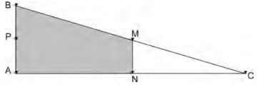
A região demarcada pelas estacas A, B, M e N deveria ser calçada com concreto. Nessas condições, a área a ser calçada corresponde
Com a frequente adulteração de combustíveis, além de fiscalização, há necessidade de prover meios para que o consumidor verifique a qualidade do combustível. Para isso, nas bombas de combustível existe um densímetro, semelhante ao ilustrado na figura. Um tubo de vidro fechado fica imerso no combustível, devido ao peso das bolinhas de chumbo colocadas no seu interior. Uma coluna vertical central marca a altura de referência, que deve ficar abaixo ou no nível do combustível para indicar que sua densidade está adequada. Como o volume do líquido varia com a temperatura mais que o do vidro, a coluna vertical é preenchida com mercúrio para compensar variações de temperatura.
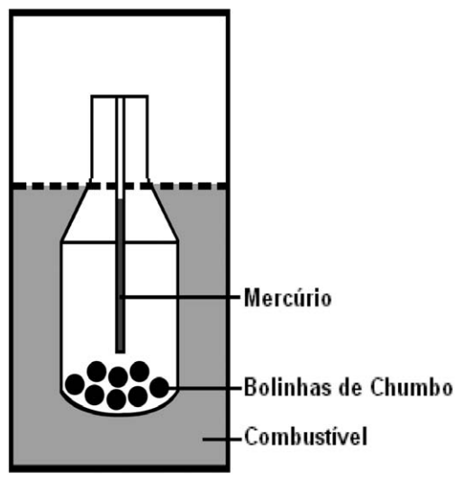
De acordo com o texto, a coluna vertical de mercúrio, quando aquecida,
A formação frequente de grandes volumes de pirita (FeS2) em uma variedade de depósitos minerais favorece a formação de soluções ácidas ferruginosas, conhecida como “drenagem ácida de minas”. Esse fenômeno tem sido bastante pesquisado pelos cientistas e representa uma grande preocupação entre os impactos da mineração no ambiente. Em contato com oxigênio, a 25°C, a pirita sofre reação, de acordo com a equação química:
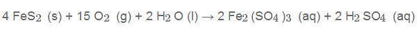
FIGUEIREDO. B. R. Minérios e Ambientes. Campinas. Unicamp. 2000.Para corrigir os problemas ambientais causados por essa drenagem, a substância mais recomendada a ser adicionada ao meio é o
Um agricultor, buscando o aumento da produtividade de sua lavoura, utilizou o adubo NPK (nitrogênio, fósforo e potássio) com alto teor de sais minerais. A irrigação dessa lavoura é feita por canais que são desviados de um rio próximo dela. Após algum tempo, notou-se uma grande mortandade de peixes no rio que abastece os canais, devido à contaminação das águas pelo excesso de adubo usado pelo agricultor.Que processo biológico pode ter sido provocado na água do rio pelo uso do adubo NPK?
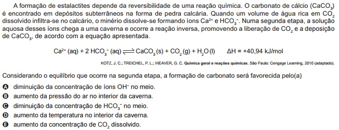
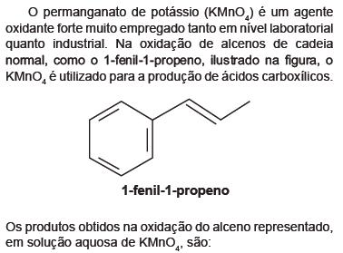
O Brasil é um dos países que obtêm melhores resultados na reciclagem de latinhas de alumínio. O esquema a seguir representa as várias etapas desse processo:
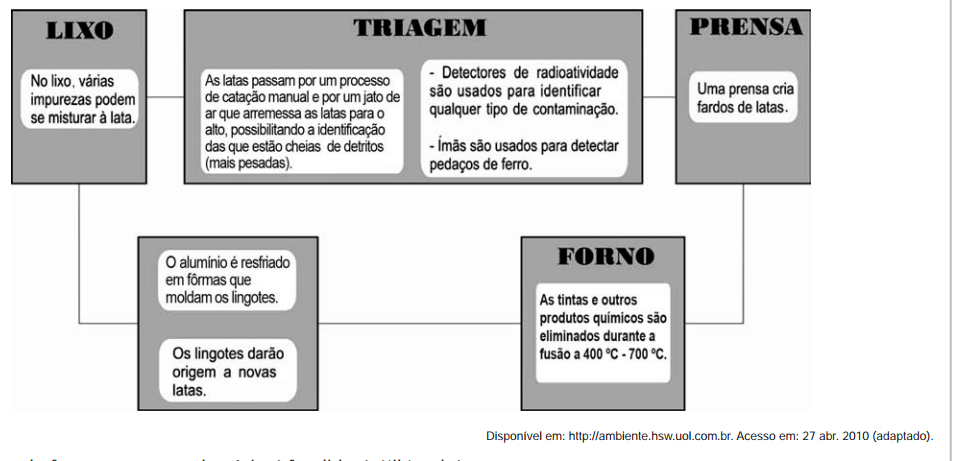
A temperatura do forno em que o alumínio é fundido é útil também porque
A fosfatidilserina é um fosfolipídio aniônico cuja interação com cálcio livre regula processos de transdução celular e vem sendo estudada no desenvolvimento de biossensores nanométricos. A figura representa a estrutura da fosfatidilserina:
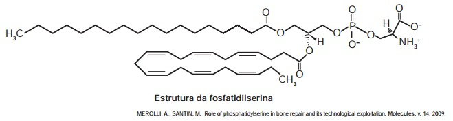
Com base nas informações do texto, a natureza da interação da fosfatidilserina com o cálcio livre é do tipo Dado: número atômico do elemento cálcio: 20
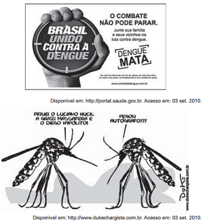
Todo texto apresenta uma intenção, da qual derivam as escolhas linguísticas que o compõem. O texto da campanha publicitária e o da charge apresentam, respectivamente, composição textual pautada por uma estratégia
Há qualquer coisa de especial nisso de botar a cara na janela em crônica de jornal — eu não fazia isso há muitos anos, enquanto me escondia em poesia e ficção. Crônica algumas vezes também é feita, intencionalmente, para provocar. Além do mais, em certos dias mesmo o escritor mais escolado não está lá grande coisa. Tem os que mostram sua cara escrevendo para reclamar: moderna demais, antiquada demais. Alguns discorrem sobre o assunto, e é gostoso compartilhar ideias. Há os textos que parecem passar despercebidos, outros rendem um montão de recados: “Você escreveu exatamente o que eu sinto”, “Isso é exatamente o que falo com meus pacientes”, “É isso que digo para meus pais”, “Comentei com minha namorada”. Os estímulos são valiosos pra quem nesses tempos andava meio assim: é como me botarem no colo — também eu preciso. Na verdade, nunca fui tão posta no colo por leitores como na janela do jornal. De modo que está sendo ótima, essa brincadeira séria, com alguns textos que iam acabar neste livro, outros espalhados por aí. Porque eu levo a sério ser sério... mesmo quando parece que estou brincando: essa é uma das maravilhas de escrever. Como escrevi há muitos anos e continua sendo a minha verdade: palavras são meu jeito mais secreto de calar.LUFT, L. Pensar é transgredir. Rio de Janeiro: Record, 2004. Os textos fazem uso constante de recursos que permitem a articulação entre suas partes. Quanto à construção do fragmento, o elemento
A recapitulação é uma ideia audaciosa e influente, associada especialmente a Ernst Haeckel. Segundo a teoria da recapitulação, as fases de desenvolvimento de um organismo (ontogenia) correspondem à história de sua espécie (filogenia). A aparência transitória de estruturas semelhantes a fendas branquiais no desenvolvimento de humanos e outros mamíferos é um exemplo notável. Os mamíferos evoluíram de um estágio ancestral de peixe e suas fendas branquiais embrionárias recapitulam tal ancestralidade.RIDLEY, M. Evolução. Porto Alegre: Artmed, 2006 (adaptado).Com base nos pressupostos da teoria da recapitulação, a assertiva que melhor a resume é:
A contaminação pelo vírus da rubéola é especialmente preocupante em grávidas, devido à síndrome da rubéola congênita (SRC), que pode levar ao risco de aborto e malformações congênitas. Devido a campanhas de vacinação específicas, nas últimas décadas houve uma grande diminuição de casos de rubéola entre as mulheres, e, a partir de 2008, as campanhas se intensificaram e têm dado maior enfoque à vacinação de homens jovens.BRASIL. Brasil livre da rubéola: campanha nacional de vacinação para eliminação da rubéola. Brasília: Ministério da Saúde, 2009 (adaptado). Considerando a preocupação com a ocorrência da SRC, as campanhas passaram a dar enfoque à vacinação dos homens, porque eles
As serpentes que habitam regiões de seca podem ficar em jejum por um longo período de tempo devido à escassez de alimento. Assim, a sobrevivência desses predadores está relacionada ao aproveitamento máximo dos nutrientes obtidos com a presa capturada. De acordo com essa situação, essas serpentes apresentam alterações morfológicas e fisiológicas, como a aumento das vilosidades intestinais e a intensificação da irrigação sanguínea na porção interna dessas estruturas.A função do aumento das vilosidades intestinais para essas serpentes é maximizar o(a)
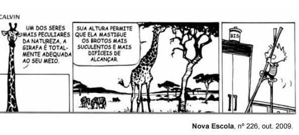
A tirinha mostra que o ser humano, na busca de atender suas necessidades e de se apropriar dos espaços,
Para preparar uma massa básica de pão, deve-se misturar apenas farinha, água, sal e fermento. Parte do trabalho deixa-se para o fungo presente no fermento: ele utiliza amido e açúcares da farinha em reações químicas que resultam na produção de alguns outros compostos importantes no processo de crescimento da massa. Antes de assar, é importante que a massa seja deixada num recipiente por algumas horas para que o processo de fermentação ocorra.Esse período de espera é importante para que a massa cresça, pois é quando ocorre a
Muitas espécies de plantas lenhosas são encontradas no cerrado brasileiro. Para a sobrevivência nas condições de longos períodos de seca e queimadas periódicas, próprias desse ecossistema, essas plantas desenvolveram estruturas muito peculiares.As estruturas adaptativas mais apropriadas para a sobrevivência desse grupo de plantas nas condições ambientais do referido ecossistema são:
Em viagens de avião, é solicitado aos passageiros o desligamento de todos os aparelhos cujo funcionamento envolva a emissão ou a recepção de ondas eletromagnéticas. O procedimento é utilizado para eliminar fontes de radiação que possam interferir nas comunicações via rádio dos pilotos com a torre de controle.A propriedade das ondas emitidas que justifica o procedimento adotado é o fato de
Um eletricista analisa o diagrama de uma instalação elétrica residencial para planejar medições de tensão e corrente em uma cozinha. Nesse ambiente existem uma geladeira (G), uma tomada (T) e uma lâmpada (L), conforme a figura. O eletricista deseja medir a tensão elétrica aplicada à geladeira, a corrente total e a corrente na lâmpada. Para isso, ele dispõe de um voltímetro (V) e dois amperímetros (A).
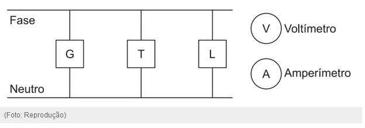
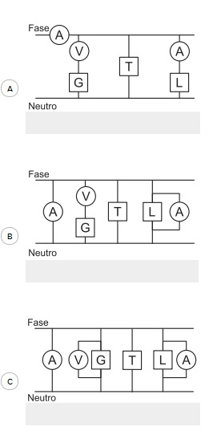
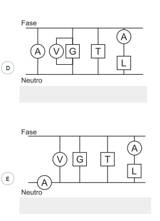
Durante uma faxina, a mãe pediu que o filho a ajudasse, deslocando um móvel para mudá-lo de lugar. Para escapar da tarefa, o filho disse ter aprendido na escola que não poderia puxar o móvel, pois a Terceira Lei de Newton define que se puxar o móvel, o móvel o puxará igualmente de volta, e assim não conseguirá exercer uma força que possa colocá-lo em movimento.Qual argumento a mãe utilizará para apontar o erro de interpretação do garoto?
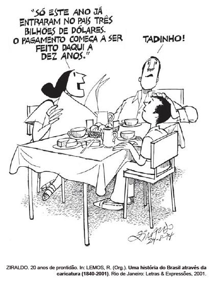
No período de 1964 a 1985, a estratégia do Regime Militarabordada na charge foi caracterizada pela
Ato Institucional nº 5 de 13 de dezembro de 1968Art. 10 – Fica suspensa a garantia de habeas corpus, nos casos de crimes políticos, contra a segurança nacional, a ordem econômica e social e a economia popular.Art. 11 – Excluem-se de qualquer apreciação judicial todos os atos praticados de acordo com este Ato Institucional e seus Atos Complementares, bem como os respectivos efeitos.Disponível em: http://www.senado.gov.br. Acesso em: 29 jul. 2010.O Ato Institucional nº 5 é considerado por muitos autores um “golpe dentro do golpe”. Nos artigos do AI-5 selecionados, o governo militar procurou limitar a atuação do Poder Judiciário, porque isso significava
Do ponto de vista geopolítico, a Guerra Fria dividiu a Europa em dois blocos. Essa divisão propiciou a formação de alianças antagônicas de caráter militar, como a OTAN, que aglutinava os países do bloco ocidental, e o Pacto de Varsóvia, que concentrava os do bloco oriental. É importante destacar que, na formação da OTAN, estão presentes, além dos países do oeste europeu, os EUA e o Canadá. Essa divisão histórica atingiu igualmente os âmbitos político e econômico que se refletia pela opção entre os modelos capitalista e socialista. Essa divisão europeia ficou conhecida como
Não é difícil entender o que ocorreu no Brasil nos anos imediatamente anteriores ao golpe militar de 1964. A diminuição da oferta de empregos e a desvalorização dos salários, provocadas pela inflação, levaram a uma intensa mobilização política popular, marcada por sucessivas ondas grevistas de várias categorias profissionais, o que aprofundou as tensões sociais. Dessa vez, as classes trabalhadoras se recusaram a pagar o pato pelas “sobras” do modelo econômico juscelinista.MENDONÇA, S. R. A Industrialização Brasileira. São Paulo: Moderna, 2002 (adaptado).Segundo o texto, os conflitos sociais ocorridos no início dos anos 1960 decorreram principalmente
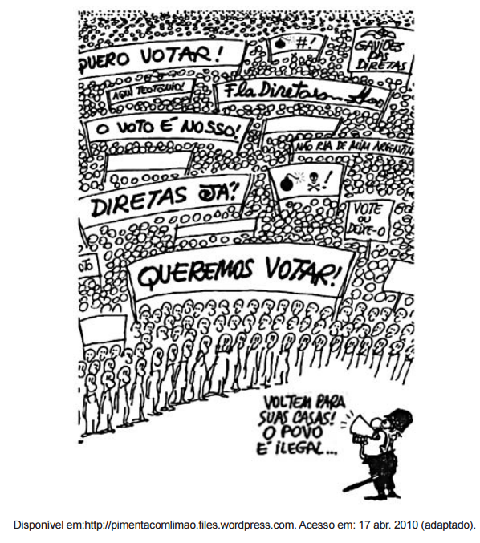
A charge remete ao contexto do movimento que ficou conhecido como Diretas Já, ocorrido entre os anos de 1983 e 1984. O elemento histórico evidenciado na imagem éFALTAIMAGEM
O autor da constituição de 1937, Francisco Campos, afirma no seu livro, O Estado Nacional, que o eleitor seria apático; a democracia de partidos conduziria à desordem; a independência do Poder Judiciário acabaria em injustiça e ineficiência; e que apenas o Poder Executivo, centralizado em Getúlio Vargas, seria capaz de dar racionalidade imparcial ao Estado, pois Vargas teria providencial intuição do bem e da verdade, além de ser um gênio político.CAMPOS, F. O Estado nacional. Rio de Janeiro: José Olympio, 1940 (adaptado).Segundo as ideias de Francisco Campos,
Empresa vai fornecer 230 turbinas para o segundo complexo de energia a base de ventos, no sudeste da Bahia. O Complexo Eólico Alto Sertão, em 2014, terá capacidade para gerar 375 MW (megawatts), total suficiente para abastecer uma cidade de 3 milhões de habitantes.MATOS, C. GE busca bons ventos e fecha contrato de R$ 820 mi na Bahia. Folha de S.Paulo, 2 dez. 2012A opção tecnológica retratada na notícia proporciona a seguinte consequência para o sistema energético brasileiro:
Uma gigante empresa taiwanesa do setor de tecnologia vai substituir parte de seus funcionários por um milhão de robôs em até três anos, segundo a agência de notícias chinesa. O objetivo é cortar despesas. Os robôs serão usados para fazer trabalhos simples e de rotina, como limpeza, soldagem e montagem, atividades que atualmente são feitas por funcionários. A empresa já tem 10 mil robôs e o número deve chegar a 300 mil em 2012 e a um milhão em três anos.Fabricante do Ipad vai trocar trabalhadores por um milhão de robôs em três anos. Disponível em: http://noticias.r7.com. Acesso em: 21 ago. 2011 (adaptado).Em relação aos efeitos da decisão da empresa, uma divergência entre o empresário e os funcionários, no exemplo citado, encontra-se nos respectivos argumentos:
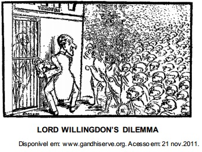
O cartum, publicado em 1932, ironiza as consequências sociais das constantes prisões de Mahatma Gandhi pelas autoridades britânicas, na índia, demonstrando
Embora haja dados comuns que dão unidade ao fenômeno da urbanização na África, na Ásia e na América Latina, os impactos são distintos em cada continente e mesmo dentro de cada país, ainda que as modernizações se deem com o mesmo conjunto de inovações.ELIAS, D. Fim do século e urbanização no Brasil. Revista Ciência Geográfica, ano IV, n. 11, set/dez. 1988.O texto aponta para a complexidade da urbanização nos diferentes contextos socioespaciais. Comparando a organização socioeconômica das regiões citadas, a unidade desse fenômeno é perceptível no aspecto
Segundo Aristóteles, uma vez deslocados de seu local natural, os elementos tendem espontaneamente a retornar a ele, realizando movimentos chamados de naturais. Já em um movimento denominado forçado, um corpo só permaneceria em movimento enquanto houvesse uma causa para que ele ocorresse. Cessada essa causa, o referido elemento entraria em repouso ou adquiriria um movimento natural.PORTO, C. M. A física de Aristóteles: uma construção ingênua? Revista Brasileira de Ensino de Física. V. 31, n° 4 (adaptado).Posteriormente, Newton confrontou a ideia de Aristóteles sobre o movimento forçado através da lei da
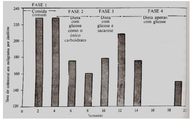
Em um experimento, um grupo de voluntários recebeu, inicialmente, alimento comum e depois uma dieta de especificação rigorosa. As suas necessidades proteicas foram satisfeitas por aminoácidos; a necessidade de massa, por gorduras essenciais; e a necessidade de carboidrato, por glicose ou uma mistura de glicose e sacarose (açúcar comum). As fases do experimento são descritas a seguir.1. Nas primeiras quatro semanas, os indivíduos comeram alimentos comuns.2. Da 4ª à 8ª semana, o suprimento de carboidrato foi apenas glicose.3. Da 8ª à 12ª semana, a fonte de carboidrato foi mista; com 75% de glicose e 25% de sacarose.4. Após a 12ª semana, a fonte de carboidrato voltou a ser glicose (como na fase 2).O gráfico acima mostra os resultados obtidos nesse experimento, em termos de taxa de colesterol no sangue (em mg/dL) ao longo de 19 semanas.(Trad.). São Paulo: Best Seller, 1988, p. 72 PAULING, L. Como viver mais e melhor. 8Ed. Cristiane Perez Ribeiro (adaptado).Do experimento descrito, é correto concluir que o nível de colesterol no sangue pode ser diminuído com a redução da ingestão de
Uma pessoa necessita da força de atrito em seus pés para se deslocar sobre uma superfície. Logo, uma pessoa que sobe uma rampa em linha reta será auxiliada pela força de atrito exercida pelo chão em seus pés.Em relação ao movimento dessa pessoa, quais são a direção e o sentido da força de atrito mencionada no texto?
À medida que a demanda por água aumenta, as reservas desse recurso vão se tornando imprevisíveis. Modelos matemáticos que analisam os efeitos das mudanças climáticas sobre a disponibilidade de água no futuro indicam que haverá escassez em muitas regiões do planeta. São esperadas mudanças nos padrões de precipitação, pois
A felicidade é, portanto, a melhor, a mais nobre e a mais aprazível coisa do mundo, e esses atributos não devem estar separados como na inscrição existente em Delfos “das coisas, a mais nobre é a mais justa, e a melhor é a saúde; porém a mais doce é ter o que amamos”. Todos estes atributos estão presentes nas mais excelentes atividades, e entre essas a melhor, nós a identificamos como felicidade.ARISTOTELES. A Política. São Paulo: Cia das Letras, 2010.Ao reconhecer na felicidade a reunião dos mais excelentes atributos, Aristoteles a identifica como
PROCURE DIREITO PARA CHEGAR ONDE QUERA nossa empresa desenvolveu um programa de estudos com vários cursos voltados para a carreira jurídica. Usufrua as vantagens do melhor material didático, da estrutura física e tecnológica e da alta qualidade de nosso corpo docente.Após cada aula, são disponibilizadas online questões de provas de concursos públicos sobre o conteúdo apresentado. A evolução do aprendizado é monitorada e o aluno recebe relatórios sobre o seu desempenho.Correio Braziliense. Caderno Simuladão, 28 abr. 2009, p. 5.No texto publicitário acima, predomina a função conativa da linguagem, que é centrada no receptor da mensagem. No texto em questão, os recursos de linguagem empregados têm o objetivo de convencer
TEXTO IOlhamos o homem alheio às atividades públicas não como alguém que cuida apenas de seus próprios interesses, mas como um inútil; nós, cidadãos atenienses, decidimos as questões públicas por nós mesmos na crença de que não é o debate que é empecilho à ação, e sim o fato de não se estar esclarecido pelo debate antes de chegar a hora da ação.TUCÍDIDES. História da Guerra do Peloponeso. Brasília: UnB, 1987 (adaptado).TEXTO IIUm cidadão integral pode ser definido por nada menos que pelo direito de administrar justiça e exercer funções públicas; algumas destas, todavia, são limitadas quanto ao tempo de exercício, de tal modo que não podem de forma alguma ser exercidas duas vezes pela mesma pessoa, ou somente podem sê-lo depois de certos intervalos de tempo prefixados.ARISTÓTELES. Política. Brasília: UnB, 1985.Comparando os textos I e II, tanto para Tucídides (no século V a.C.) quanto para Aristóteles (no século IV a.C.), a cidadania era definida pelo (a)